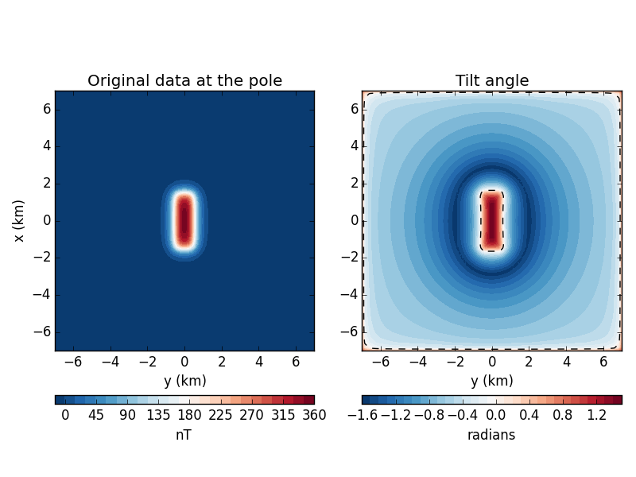

The tilt angle is a useful transformation of potential field data for boundary
detection. It is commonly used with reduced-to-the-pole total field magnetic
anomaly data. We’ll test the fatiando.gravmag.transform.tilt function
on some synthetic magnetic data. For simplicity here, we’ll assume that our
data is already reduced to the pole. You can use
fatiando.gravmag.transform.reduce_to_pole to reduce your data.
The zero contour of the tilt is said to outline the body so we’ve plotted it as a dashed line on the tilt map.
from __future__ import division, print_function
import matplotlib.pyplot as plt
from fatiando.gravmag import prism, transform
from fatiando.mesher import Prism
from fatiando import gridder, utils
# Create some synthetic magnetic data. We'll assume the data is already reduced
# to the pole.
inc, dec = 90, 0
mag = utils.ang2vec(1, inc, dec)
model = [Prism(-1500, 1500, -500, 500, 0, 2000, {'magnetization': mag})]
area = (-7e3, 7e3, -7e3, 7e3)
shape = (100, 100)
x, y, z = gridder.regular(area, shape, z=-300)
data_at_pole = prism.tf(x, y, z, model, inc, dec)
# Calculate the tilt
tilt = transform.tilt(x, y, data_at_pole, shape)
# Make some plots
plt.figure(figsize=(8, 6))
ax = plt.subplot(1, 2, 1)
ax.set_title('Original data at the pole')
ax.set_aspect('equal')
tmp = ax.tricontourf(y/1000, x/1000, data_at_pole, 30, cmap='RdBu_r')
plt.colorbar(tmp, pad=0.1, aspect=30, orientation='horizontal').set_label('nT')
ax.set_xlabel('y (km)')
ax.set_ylabel('x (km)')
ax.set_xlim(area[2]/1000, area[3]/1000)
ax.set_ylim(area[0]/1000, area[1]/1000)
ax = plt.subplot(1, 2, 2)
ax.set_title('Tilt angle')
ax.set_aspect('equal')
tmp = ax.tricontourf(y/1000, x/1000, tilt, 30, cmap='RdBu_r')
plt.colorbar(tmp, pad=0.1, aspect=30,
orientation='horizontal').set_label('radians')
# Plot the tilt zero contour
ax.tricontour(y/1000, x/1000, tilt, levels=[0], colors='k', linestyles='--',
linewidths=1)
ax.set_xlabel('y (km)')
ax.set_xlim(area[2]/1000, area[3]/1000)
ax.set_ylim(area[0]/1000, area[1]/1000)
plt.tight_layout()
plt.show()
Total running time of the script: ( 0 minutes 0.892 seconds)